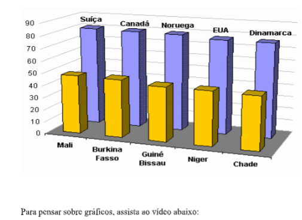

Capítulo 5: Expectativa de Vida
À parte da população que exerce uma atividade remunerada é denominada população economicamente ativa. Essa população é formada por indivíduos de ambos os sexos. A população economicamente ativa se divide em dois grupos: • população ocupada - que está trabalhando (empregada); • população disponível - que não está trabalhando (desempregada). A população disponível forma o chamado exército de reserva de mão-de-obra, necessário em qualquer país. Sem essa reserva de mão-de-obra, a expansão das atividades econômicas ficaria limitada, ou seja, é preciso que exista certa quantidade de pessoas precisando trabalhar para que os novos empregos, gerados pelo crescimento da economia, possam ser ocupados.
Porém, uma porcentagem de desempregados muito elevada indica uma situação de estagnação econômica, ou seja, de crescimento incapaz de ocupar a mão-de-obra desempregada. A parte da população que não exerce uma atividade remunerada é denominada população economicamente inativa. As crianças, os idosos, os inválidos e as mulheres que se dedicam aos afazeres domésticos são classificados como população inativa. A população ativa se distribui pelos três setores da economia: primário, secundário e terciário. De acordo com a porcentagem da população em cada um dos setores é possível fazer uma análise sobre o grau de desenvolvimento econômico do país. Importante: - Setor primário: agricultura, pecuária e extrativismo mineral, vegetal e animal. - Setor secundário: indústria e construção civil. - Setor terciário: comércio e prestação de serviços.